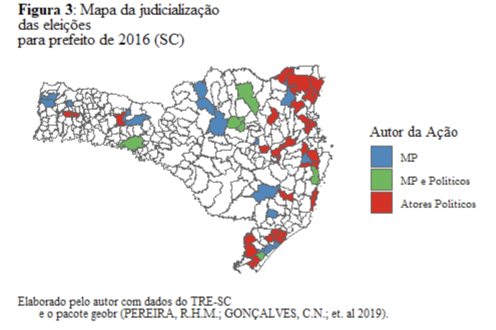
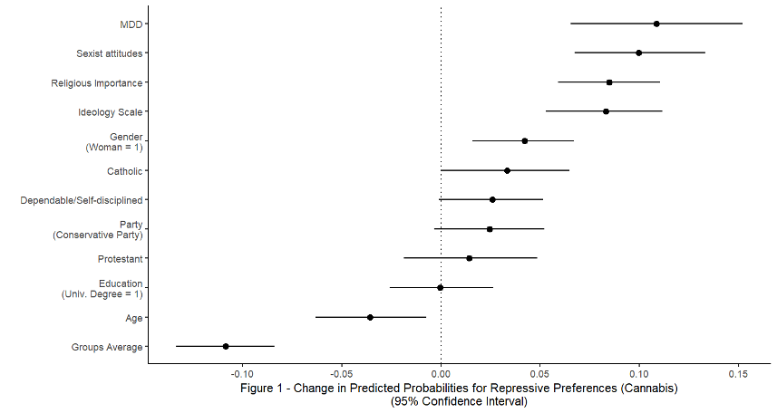

Research Interests
My research is currently focused on political psychology, cognition, public opinion, and methodology. I am particularly interested in:
- How political identities interact with belief structures
- Political cognition and information processing
- Public opinion formation and measurement
- Cultural contexts and their influence on political behaviour
Current Research
Dissertation Project
Associative Diffusion and Belief System Consolidation: How Cultural Meanings Shape Political Identities in Contemporary Democracies
University of Western Ontario
My dissertation is focused on understanding how different cultural and informational environments lead to variation in the content and structure of political schemas. This research:
- Investigates the interaction between political identity formation and cultural influences
- Explores how belief structures mediate political behaviour
- Employs mixed methods including surveys and experimental approaches
I am currently developing this research under the supervision of Dr. Mathieu Turgeon.
Research Experience
Research Associate - ENAP
Escola Nacional de Administração Pública (ENAP) (Jan 2024 - Sep 2024)
Remote position with the Brazilian federal government institution responsible for internal research and data analysis:
- Led analysis for a project investigating determinants of public support and opinion about the Brazilian civil service
- Analyzed an internal survey of civil servants to identify correlates of satisfaction and perceptions of bureaucratic autonomy and political independence
Research Assistant - Conspiracy Theory Projects
University of Western Ontario (May 2023 - Present)
Working with Prof. Mathieu Turgeon on multiple projects: - Conspiracy Theory Mobilization Project: Classified and rated Tweets according to established criteria (paper currently under peer review) - Conspiracy Theory Measurement Project: Analyzing survey experiment data and conducting meta-analysis of conspiracy theory measurement instruments to assess publication bias
Research Assistant - Student Experience Survey
University of Western Ontario, London, Ontario (Jan. 2023 - May 2023) Internal student experience survey – Department of Political Science. Created and implemented comprehensive student experience survey using Qualtrics. Project led by Prof. Biswas-Mellamphy.
Research Assistant - Emotions & Prejudice Project
University of Western Ontario (Apr 2022 - Present)
Working with Drs. Jordan Mansell, Mathieu Turgeon, and Amanda Friesen: - Assisted in survey development and experimental interventions - Set up lab equipment and physiological measurement systems - Currently analyzing survey data and physiological readings - Processing Blood Volume Pulse and Heart Rate data - Creating standardized databases for statistical analysis
Research Assistant - Conspiracy Theory Book Project
University of Western Ontario (Oct 2021 - Dec 2022)
Working with Prof. Mathieu Turgeon: - Collected and analyzed historical and social media data about conspiracy theories in Brazil - Studied communication patterns and political correlates of conspiracy theory spread - Developed an academic article currently being prepared for publication - Created an analytical report using experimental survey data from the compulsory voting project
Previous Research Positions
- Judicial Responses to Corruption Project, Universidade Federal de Santa Catarina (Oct 2020 - Apr 2021)

Map of electoral judicialization of the 2016 mayoral elections in Santa Catarina (SC), Brazil. The colors indicate the initiators of legal actions: blue represents actions initiated by the Public District Attorney (MP), green shows cases initiated jointly by the MP and politicians, and red indicates actions initiated by political actors alone.
- Latin American Campaigns Project, University of California San Diego (Remote - Apr 2020 - Apr 2021)
Research assistant work for Professor Scott Desposato.
Conference Presentations & Workshops
“Measuring Support for Conspiracy Theories”
International Society of Political Psychology (ISPP) Conference, Montreal (July 2023)
Presented initial findings from work developed with Mathieu Turgeon examining different measurement approaches for conspiracy theory belief and their impacts on reported support levels.
“The Politics of Moral Disciplining: Individual Differences and the Moralization of Bodily Pleasures”
Canadian Political Science Association (CPSA) Annual Meeting, York University (May 2023)
Presented research on individual differences underlying repressive moral policy attitudes, focusing on: - Regulation of bodily pleasures (drug policy as exemplar) - Life and death issues (medical assistance in dying) - Mixed categories (abortion) - Role of moral disciplining disposition, sexual traditionalism, empathy, ideology, and religiosity

This visualization shows how different individual characteristics and psychological traits affect support for repressive cannabis policies. Points to the right of the vertical dotted line indicate factors that increase support for repressive policies, while points to the left indicate factors that decrease support. Data from the 2019 Canadian Election Study (Stephenson, Harell, Rubenson, Loewen, 2020)
ISPP Academy Workshop
International Society of Political Psychology, Montreal (July 2023)
Participated in a three-day pre-conference workshop featuring: - Lectures by leading political psychology scholars - Presentation rounds and open discussions - Networking with established researchers and peers in the field
Research Skills
- Data Analysis: R, Excel, Stata, SPSS
- Research Design: Observational and experimental methodologies
- Survey Tools: Qualtrics survey platform (design and implementation)
- Interactive Applications: Shiny apps and tutorials
- Geospatial Analysis: Workshop certification
- Languages: Fluent in English and Portuguese, Advanced Spanish, Intermediate French
Grants & Awards
Graduate Research Award Funds - Faculty of Social Science (Apr 2023)
University of Western Ontario
- Awarded $550 to conduct primary research for dissertation project on morality policies
- Research explores why certain behaviors are treated as matters of repression vs. tolerance
- Investigates nuances of social conservatism not captured by traditional ideological measures
- Tests Moral Disciplining Theory through observational and experimental approaches